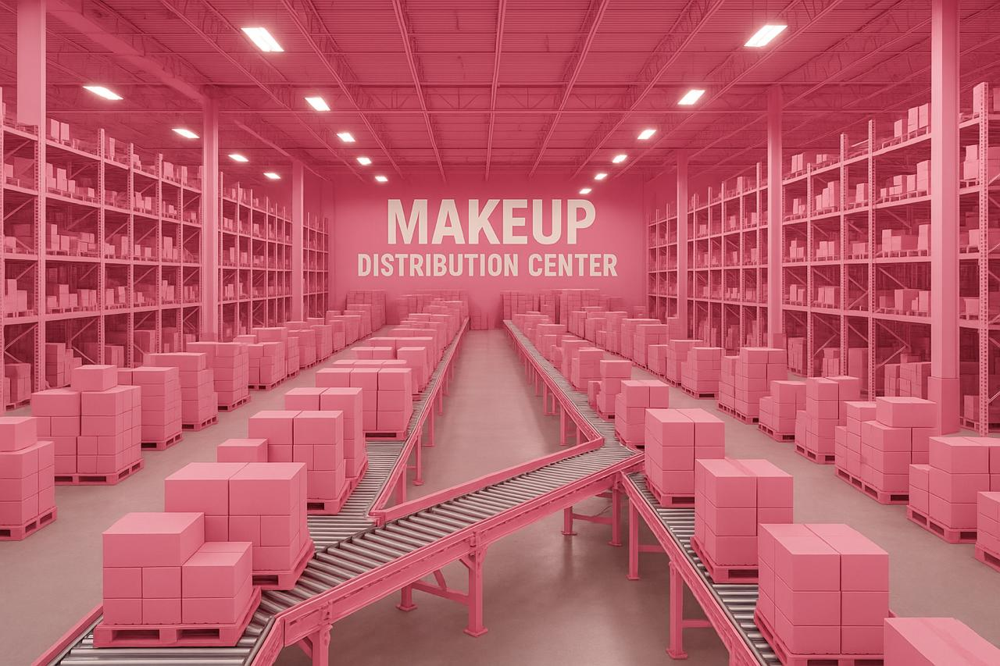

Nenhum item na sacola de compras
A Anas²
A Anas² é a maior empresa no comércio de maquiagens, segmento de beleza em todo o mundo. Fundada em 2015, possui filiais em 124 países, sendo líder de mercado com mais de 90% de participação em 118 deles.
Nosso centro de distribuição fica em Lorena, em São Paulo. De lá, saem 48 aviões que distribuem nossos produtos às casas do mundo todo. Nosso centro de distribuição:

Compre suas maquiagens e produtos de skin care na Anas². Acesse nossa loja
História da marca
A fundação em 2015 ocorreu em um momento de muita dificuldade das Anas. As duas amigas investiram todas as suas economias nessa nova iniciativa, revolucionária para a época. As fundadoras Ana Beatriz e Ana Mel, dotadas de particular visão administrativa, guiaram os negócios da empresa durante 10 anos. O nome da empresa é inspirado no nome das amigas, já que as duas têm o primeiro nome como Ana.
O crescimento da empresa foi praticamente instantâneo. Nos primeiros 5 anos, já atendia 18 países. Bateu a marca de 100 países em apenas 15 anos de existência. Até hoje, já atendeu 740 milhões de usuários diferentes, em bilhões de diferentes pedidos.
O crescimento em número de funcionários é também assombroso. Hoje, é a maior empregadora do Brasil, mas mesmo após apenas 5 anos de sua existência, já possuía 30 mil funcionários. Fora do Brasil, há 240 mil funcionários, além dos 890 mil brasileiros nas instalações de Lorena e nos escritórios em todo o país.
Dada a importância econômica da empresa para o Brasil, a Anas já recebeu diversos prêmios, homenagens e condecorações. Os presidentes do Brasil já visitaram as instalações da Anas², além de presidentes da União Europeia, Ásia e o secretário-geral da ONU.
- Produtos de excelente qualidade
- Lojas espalhadas em muitos shoppings
- Compra online
- Muitos cupons ou promoções em compras online
- Maior comércio de produtos de beleza facial do mundo
- Atendimento via telefone, email, chat, twitter, facebook, carta, fax e telegrama
- Presente em 124 países
- Mais de um milhão de funcionários em todo o mundo